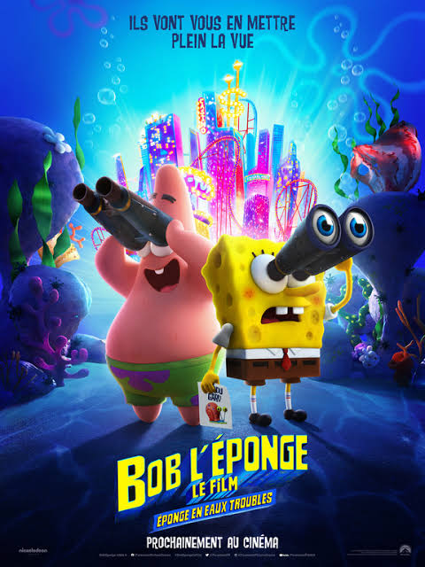

The SpongeBob Movie: Sponge on the Run is a 2020 live-action/computer-animated adventure comedy film. It is the first fully 3D stylized CGI film in the franchise, bringing a beautiful new visual look to the beloved citizens of Bikini Bottom as they head out on a high-stakes rescue mission.

Image Source: Paramount Pictures / Nickelodeon Movies
When SpongeBob's beloved pet snail Gary is suddenly "snail-napped" by King Poseidon, SpongeBob and Patrick embark on a hilarious journey to the Lost City of Atlantic City to bring him home. Along the way, they navigate the delights and dangers of the casino floor, meet a wise sage named Sage, and discover that the power of friendship is the greatest force of all.
Here are the key characters featured in this road-trip rescue mission:

An optimistic sea sponge who goes to the ends of the ocean to rescue his best friend and pet snail, Gary.

SpongeBob's loyal, goofy best friend who proudly joins the trek to Atlantic City, providing morale support and comedy.

SpongeBob's cherished pet snail whose slime is coveted by King Poseidon for its age-reversing skin-care qualities.

A literal, mystical tumbleweed with the face of Keanu Reeves who guides SpongeBob and Patrick through their trials of courage.
Sponge on the Run is a visually spectacular addition to the franchise. The 3D animation breathes wonderful new life and texture into the characters, and the heartwarming flashbacks to Kamp Koral add great emotional depth. It is a sweet, laugh-out-loud movie filled with incredible celebrity cameos.
Check out these links to find out more about the movie: